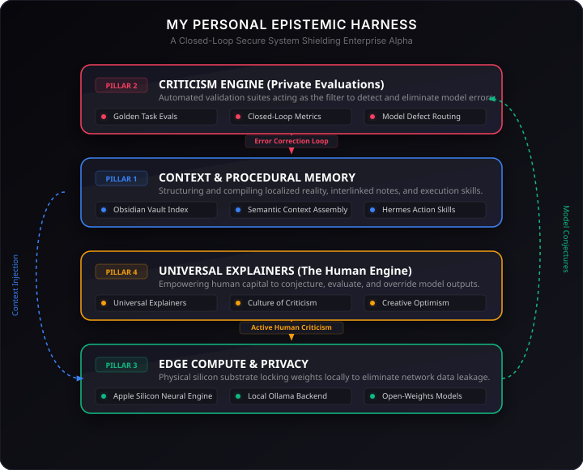

A Popperian and Hayekian critique of Satya Nadella's "Reverse Information Paradox" and the future of enterprise epistemic defensibility.
"This paper presents a rigorous critique of Microsoft CEO Satya Nadella’s thesis on 'The Reverse Information Paradox.' While Nadella successfully identifies a vital market friction—where AI buyers risk exporting their proprietary knowledge to service providers—we expose two fundamental epistemological fallacies in his proposed solution: the 'Bucket Theory of the Mind' and the 'Zero-Sum Fallacy of Knowledge.' Drawing on Karl Popper's critical rationalism, Friedrich Hayek's local particulars, and David Deutsch's explanatory universality, we argue that enterprise defensibility does not lie in hoarding 'intelligence exhaust' inside a secure cloud tenant. Instead, we propose a modernized 'Enterprise Epistemic Loop' and establish four concrete, non-arbitrary pillars of tech defensibility that prioritize local error-elimination, programmatic skills, and a culture of critical human rationalism over passive data accumulation."
On July 12, 2026, Microsoft Chairman and CEO Satya Nadella published a long-form essay on X articulating a defining tension of the artificial intelligence economy:
"Nobel economist Kenneth Arrow’s classic 1962 Information Paradox outlined a challenge that has defined the digital economy for sixty years: a seller cannot demonstrate the value of information without disclosing it, but once disclosed, the buyer has already acquired it for free."
"Today, the rise of artificial intelligence has flipped this equation on its head. In the AI era, we are experiencing The Reverse Information Paradox: the buyer risks giving away knowledge, just in order to use what they bought."
"You essentially pay for intelligence twice—once with money, and again with something even more valuable: the proprietary knowledge you must reveal to make that intelligence useful. The better you want the model to perform, the more of that knowledge you have to feed it!"
"This is because AI models do not just consume data; they learn from 'intelligence exhaust.' This exhaust leaks almost imperceptibly: trace by trace, correction by correction, eval by eval... If learning flows in only one direction, economic value converges toward the owners of the learning infrastructure rather than the creators of the knowledge."
— Satya Nadella, July 12, 2026To resolve this structural drain, Nadella proposes establishing a hard "trust boundary" within the enterprise tenant, built on five foundational priorities—the 5 C's:
Nadella’s starting coordinate is structurally sound as an economic description of market friction. The transition from the cloud era to the AI era flips the vulnerability vector entirely:
| Paradox Class | Arrow's Classic Information Paradox (1962) | Nadella's Reverse Information Paradox (2026) |
|---|---|---|
| Primary Vulnerability | The Seller of Information | The Buyer of AI Intelligence |
| The Friction Vector | Proving value requires revealing the information, which instantly transfers scarcity and ownership to the buyer for free. | Making a rented model useful requires feeding it local, sensitive context, which transfers proprietary insight to the seller's infrastructure. |
| Core Resource | Static data, formulas, or specific information. | Active operational traces, evaluations, local human corrections, and strategic decisions. |
| Defensive Strategy | Patents, NDAs, legal trade secrets, and deferred disclosure. | Local tenant boundaries, open-weights edge compute, private evaluation loops, and orchestration decoupling. |
Nadella’s most profound insight is his focus on "intelligence exhaust," specifically pointing out that the most valuable data generated inside an enterprise is not raw prompts, but corrections—the highly context-specific moments when a human overrides, refines, or corrects a model's output.
In Popperian epistemology, knowledge grows exclusively through Conjectures and Refutations:
If an enterprise allows this "exhaust" to flow back to a centralized cloud provider to train a shared foundation model, they are systematically exporting their primary evolutionary asset: their active capacity for error correction. In a world of commoditized models, giving away your corrections is equivalent to giving away your future capacity to create new knowledge.
Nadella implicitly invokes Friedrich Hayek’s concept of "particular intelligence"—the highly localized, context-specific, and non-aggregatable knowledge held by individuals on the ground. This maps directly to Karl Popper's critique of centralized planning in The Open Society and Its Enemies:
| Epistemic Stance | Utopian Social Engineering (Centralized AI) | Piecemeal Social Engineering (Decentralized Learning) |
|---|---|---|
| Philosophy | Believes a central, massive foundational model can absorb, aggregate, and perfectly dictate all human operational knowledge. | Recognizes that all knowledge is fallible, decentralized, and must be continuously corrected by local agents at the edge. |
| Systemic Threat | Monopolistic "omniscient" engines extracting local enterprise wisdom, causing corporate stagnation and vendor dependency. | Local operational drift, inconsistency across departments if learning is not captured or structured. |
| The Solution | Trusting hyperscalers to manage central boundaries. | The Trust Boundary: isolating local learning loops inside localized, open-weights enterprise tenants. |
While Nadella’s diagnosis of market asymmetry is brilliant, a deeper critical analysis exposes two profound epistemological fallacies in his thinking: The Bucket Theory of the Mind and The Zero-Sum Fallacy of Knowledge.
Karl Popper famously criticized the "Bucket Theory of the Mind"—the empiricist belief that our minds are passive buckets into which observations, sensory data, and experiences are poured, and that knowledge is distilled from this accumulated experience through induction.
Nadella’s concept of "intelligence exhaust" (prompts, logs, corrections, evaluations) treats learning as a liquid material substance that can be "accumulated" inside a bucket (such as an Azure tenant boundary) to create a moat. He views the model as an inductive bucket that gets smarter simply by having more corrections poured into it.
As David Deutsch writes in The Beginning of Infinity, this is a fundamental error:
1. Raw data contains no explanations: A database of logs, prompts, and corrections ("exhaust") is a graveyard of yesterday's solved problems. It does not contain the theories or creative explanations required to solve tomorrow's unforeseen problems.
2. Knowledge is actively generated, not passively accumulated: Knowledge is created by creative conjecture and criticism (the Searchlight). The "exhaust" is merely the byproduct of this creative process, not the generator of it.
3. The Searchlight beats the Bucket: Hiding your logs in a secure tenant boundary is useless if you stifle the open-ended creativity, critical thinking, and agency of the human minds in your organization. A company focusing purely on "data boundaries" while treating its employees as passive prompt-punchers will soon have no valuable "exhaust" to protect.
Nadella’s paradox assumes that learning is a zero-sum game: if a centralized model provider learns from your enterprise's corrections, your competitive edge is drained, and value is permanently exfiltrated. This conflates information (which is rivalrous and zero-sum in physical storage) with knowledge (which is non-rivalrous, open-ended, and non-zero-sum).
When an engineer corrects a model, the model provider does not "steal" the engineer's creative capacity. The provider merely captures a high-probability weight adjustment. The active capacity to interpret reality, criticize the model's new output, and formulate a better theory remains entirely localized within the human minds on the ground. You cannot "exfiltrate" the searchlight by collecting the footprints of where it shone yesterday. Real value lies in the dynamic process of ongoing problem-solving, not in a static library of past errors.
To move beyond the materialist limits of Nadella's "data hoarding," we must redefine the growth of enterprise knowledge through a modernized Enterprise Epistemic Loop.
This loop is an operational adaptation of Popper's classic formula for the growth of knowledge:
Where \(P_1\) is the initial friction, \(TT\) is the tentative theory/conjecture generated by the generative agent, \(EE\) is the error-elimination suite (the private evaluations), and \(P_2\) is the higher-order problem that emerges, driving infinite progression.
In this framework, the enterprise moat is not the "exhaust" stored in a bucket, but the velocity and fidelity at which the loop spins. If your loop spins faster and with higher fidelity than your competitors', you will systematically hill-climb toward superior explanations, out-innovating anyone relying on static, centrally rented authorities.
To operationalize the Epistemic Loop and build real defensibility in tech, we compress Nadella's fragmented priorities into four highly consolidated, non-arbitrary pillars:

Satya Nadella has successfully diagnosed the defining economic conflict of the AI era: the battle over who captures the value of error-correction.
His 5 C's framework provides enterprises with a robust operational blueprint for shielding their learning loops. However, true epistemic agency cannot be rented from a cloud provider. The ultimate enterprise moat is not a walled-off database of logs or servers on Azure; it is the freedom, creativity, and speed with which an organization's human explainers can conjecture, prototype, and refute errors in the physical world using a refined Enterprise Epistemic Loop delivered via an Enterprise Epistemic Harness!